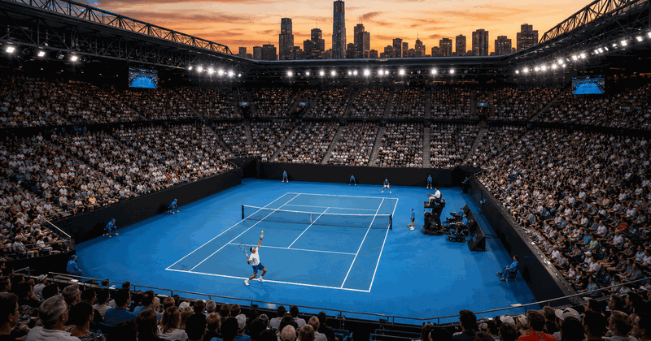
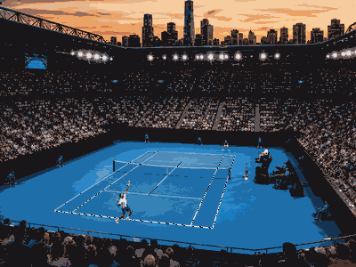

Australian Open
First held1905
SurfaceHard
Top 4 title leaders
1 AustraliaMargaret Court
AustraliaMargaret Court
11
2 SerbiaNovak Djokovic
SerbiaNovak Djokovic
10
3 United StatesSerena Williams
United StatesSerena Williams
7
4AustraliaNancye Wynne Bolton
6

More tennisTennis topicMore tennis events, venues and calendar moments.